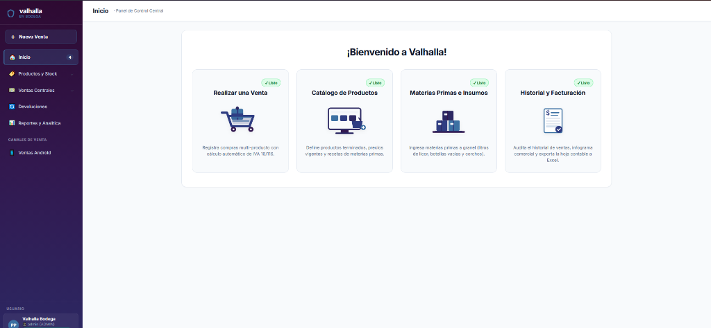
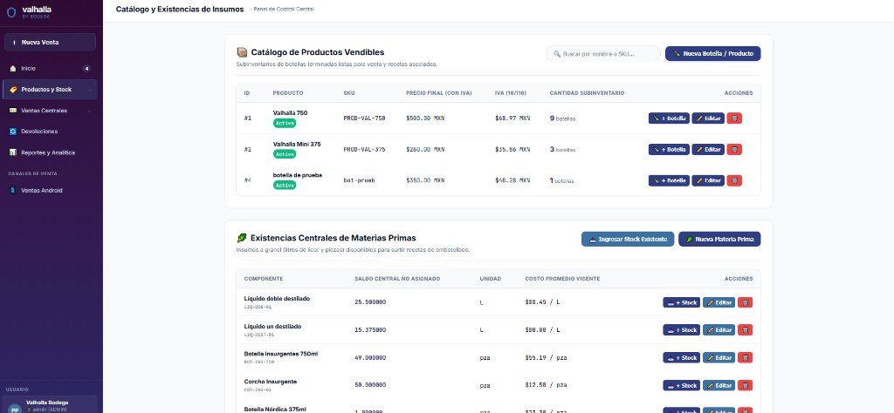
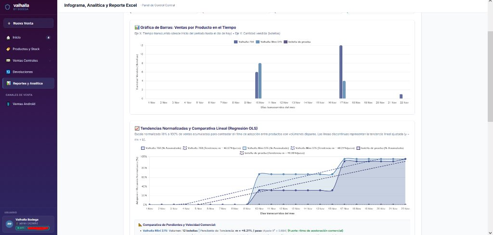
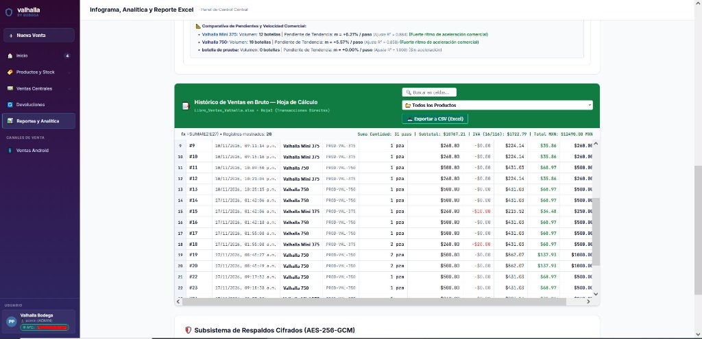
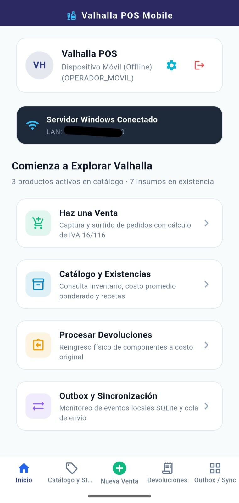
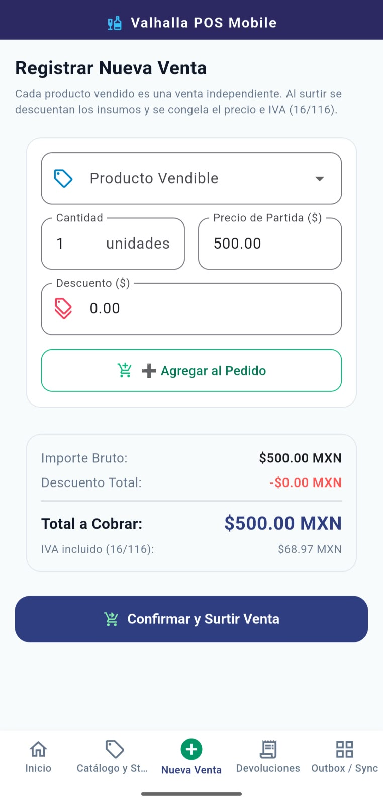
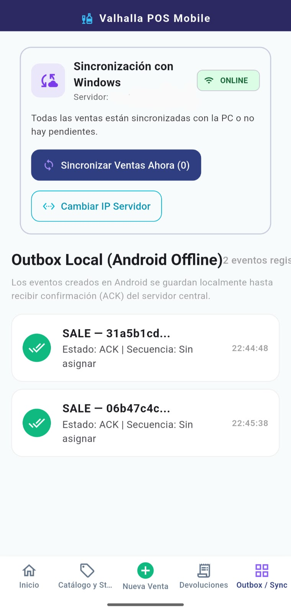

Manual Oficial de Operación Empresarial
VALHALLA POS
Sistema Inteligente de Inventario, Embotellado y Punto de Venta Local con Terminal Móvil
🛡️
Diseñado para el Empresario y su Equipo
Esta guía está pensada para dueños, encargados de almacén y vendedores sin conocimientos en sistemas. Explica paso a paso, con capturas reales y sin tecnicismos, cómo operar el software en la computadora central y en los teléfonos móviles.
PARTE I: El ABC de Valhalla (En 2 Minutos)
Bienvenido a Valhalla POS. Este software fue diseñado para destilerías, embotelladoras y comercios que necesitan un control riguroso de su dinero y de sus botellas sin complicarse la vida con sistemas lentos o cobros mensuales por internet.
1. El Concepto del "Doble Inventario"
A diferencia de una tienda común, tu negocio tiene dos tipos de existencias que no deben mezclarse:
- Bodega Central (Materias Primas): Aquí viven tus alcoholes y destilados a granel (contados por litros con precisión de decimales), tus botellas vacías y tus corchos (contados por piezas). Esto no se vende al público directamente.
- Subinventario de Mostrador (Botellas Terminadas): Aquí viven las botellas ya llenas, etiquetadas y listas para venta (ej. Valhalla 750ml o Valhalla Mini 375ml). Cada vez que vendes una botella en el mostrador o en el celular, se descuenta de aquí.
💡 ¿Cómo se conectan ambos mundos? (El Embotellado)
Cuando tu personal llena botellas, tú simplemente presionas el botón
"+ Botella" en la computadora. El sistema, de manera automática, descuenta los litros exactos de alcohol y las piezas de botellas y corchos de la bodega central, y suma las botellas listas para venta en tu mostrador. ¡Cero cálculos a mano!
2. El Milagro de Costo $0 MXN en Internet y Servidores
Valhalla funciona dentro de tu propio local aprovechando la red Wi-Fi de tu módem. La computadora de tu oficina actúa como la Cava Central Inteligente y los teléfonos celulares de tus vendedores se conectan a ella de forma inalámbrica.
| Dispositivo |
¿Dónde se usa? |
Función Principal |
| 🖥️ Computadora de Oficina (Windows) |
Caja Principal / Escritorio |
Control maestro, altas de productos, recetas, reportes para el contador, analista estadístico de ventas y aprobación de pedidos. |
| 📱 Teléfonos Vendedores (Android) |
Piso de venta / Bodega / Cava |
Cobro ágil a clientes, escaneo de botellas, registro de devoluciones y trabajo continuo incluso si bajan a zonas sin señal. |
PARTE II: Manual de la Computadora Principal (Windows)
1. Cómo Encender y Apagar el Sistema
-
1
Al llegar en la mañana: En tu escritorio de Windows encontrarás el acceso directo llamado iniciar_servidor.bat. Haz doble clic sobre él. En 3 segundos se abrirá tu navegador con Valhalla listo para operar.
-
2
Al cerrar la tienda en la noche: Haz doble clic sobre detener_servidor.bat. El sistema cerrará todos los procesos de forma limpia y segura.
2. Panel de Control y Accesos Rápidos (Inicio)

Figura 1: Pantalla principal de bienvenida en Windows con 4 accesos rápidos y panel de usuario lateral.
Al entrar verás una pantalla limpia y sin distractores. Las 4 tarjetas te llevan a lo que más usas:
- Realizar una Venta: Abre el mostrador para cobrar clientes al instante.
- Catálogo de Productos: Para ver tus botellas, precios y recetas.
- Materias Primas e Insumos: Para ver cuántos litros de licor y cuántas botellas vacías te quedan.
- Historial y Facturación: Para ver los ingresos del día y descargar el Excel para el contador.
3. Catálogo de Productos y Embotellado en 1 Clic

Figura 2: Mitad superior: Botellas terminadas. Mitad inferior: Existencias centrales de alcohol a granel y piezas.
En esta pantalla tienes el control de todo lo que existe en tu negocio:
-
1
Para dar de alta un producto nuevo: Pulsa el botón azul Nueva Botella / Producto. Le asignas nombre (ej. Tequila Reposado 750ml), precio final al público y los ingredientes que requiere (ej. 0.750 L de licor + 1 botella de vidrio + 1 corcho).
-
2
Para "Embotellar": Cuando tus operarios llenen producto, pulsa el botón + Botella junto al producto. El sistema tomará los insumos de la bodega central y sumará las botellas a tu mostrador al instante.
-
3
Ingresar más alcohol o materias primas: Cuando llegue el camión proveedor, pulsa Ingresar Stock Existente o + Stock en la materia prima correspondiente para registrar los litros o piezas recibidas.
4. El Analista Estadístico Integrado: Tu Asesor Comercial Automático
Una de las joyas más poderosas de Valhalla es que incluye un cerebro matemático predictivo que analiza día por día el ritmo de compra de tus clientes.

Figura 3: Comparativa de aceleración comercial con regresión de tendencias OLS en tiempo real.
No necesitas saber estadística para aprovecharlo. En la parte inferior de la gráfica encontrarás las conclusiones en lenguaje humano:
- 🟢 Fuerte ritmo de aceleración comercial (Línea verde/azul con pendiente alta): Son tus productos estrella. La gente los está pidiendo a un ritmo acelerado. ¡Asegúrate de tener materias primas suficientes para no quedarte sin stock!
- 🔵 Crecimiento sostenido: Productos con venta estable y predecible que garantizan el flujo de caja continuo.
- ⚪ Sin aceleración (Pendiente plana en 0.00%): Son botellas que llevan días o semanas sin venderse. El sistema te avisa proactivamente para que puedas armar promociones, paquetes o cambiarles la exhibición en mostrador.
5. Exportación Contable en 1 Clic (Para tu Contador)

Figura 4: Histórico detallado con fórmula fiscal 16/116 y botón de exportación a Excel (CSV).
Olvídate de calcular el IVA a mano o arrastrar lápiz al fin de mes. Pulsa el botón verde "Exportar a CSV (Excel)" y el sistema generará un archivo compatible con Microsoft Excel y Google Sheets con el desglose exacto de subtotal, IVA (16/116) y total neto cobrado.
PARTE III: Manual del Teléfono del Vendedor (Android v1.3)
La aplicación móvil está pensada para que tus vendedores atiendan a clientes en el piso de venta, en mesas o en bodegas sin necesidad de caminar hasta la computadora central.
1. Conexión del Teléfono con la Computadora

Figura 5: Pantalla de inicio de la APK Android con el botón de configuración (⚙️) y accesos rápidos.
-
1
Abrir la Configuración: En la tarjeta superior donde dice Valhalla POS, toca el engrane azul ⚙️.
-
2
Escribir la dirección: Introduce la dirección que aparece en tu computadora (ej. 192.168.1.70:8000). Esto se hace una sola vez; el teléfono la recordará para siempre.
-
3
Listo: El recuadro cambiará a "Servidor Windows Conectado".
2. Cómo Cobrar una Venta en Piso (Paso a Paso)

Figura 6: Pantalla de cobro ágil con desglose fiscal de IVA 16/116 y botón de confirmación en 1 toque.
-
1
Elegir el producto: Toca el menú Producto Vendible y selecciona la botella deseada (o escanea su código QR desde la pestaña de catálogo).
-
2
Cantidad y Descuentos: Indica cuántas botellas se lleva el cliente. Si tienes autorización para hacer un descuento especial, escribe el monto en pesos.
-
3
Tocar "Agregar al Pedido": La pantalla te mostrará el total a cobrar en letras grandes y el desglose de IVA incluido.
-
4
Tocar "Confirmar y Surtir Venta": ¡Listo! La venta queda registrada y el stock de la botella se descuenta en el acto.
3. ¿Qué pasa si el vendedor baja al sótano y se queda sin Wi-Fi?
🛡️ Tecnología de "Caja Fuerte Offline" (SQLite Outbox)
A diferencia de otros puntos de venta que se congelan cuando se cae el internet,
Valhalla nunca deja de vender.

Figura 7: Bandeja de sincronización con respaldo de ventas locales y confirmación ACK.
Si el vendedor no tiene señal Wi-Fi:
- El teléfono sigue cobrando con total normalidad.
- Las ventas se guardan de forma encriptada en la memoria interna del teléfono.
- En cuanto el vendedor regresa al área con señal, pulsa el botón azul "Sincronizar Ventas Ahora". Todas las ventas se transmiten a la computadora de la oficina en 1 segundo, con un código de protección que impide que una venta se duplique por error.
PARTE IV: Preguntas Frecuentes y "Qué hacer si..."
❓ ¿Qué hago si el celular dice "Servidor Desconectado"?
Solo revisa dos cosas sencillas:
- Que la computadora de la oficina esté encendida con el sistema abierto.
- Que el celular esté conectado a la misma red Wi-Fi del negocio (no a sus datos móviles). En cuanto se conecta al Wi-Fi, el sistema se enlaza en automático.
❓ ¿Cómo me protege Valhalla contra robos o fugas en devoluciones?
Cuando un cliente regresa una botella, el sistema te exige ingresar el Folio de Venta original para verificar que realmente fue comprada en tu tienda y cuánto pagó. Además, el operario debe marcar la casilla obligatoria confirmando que revisó físicamente que la botella esté cerrada y en perfectas condiciones antes de que el sistema autorice el reembolso.
❓ ¿Mis recetas y mis ventas están respaldadas si la computadora se descompone?
Sí, al 100%. Valhalla incluye un subsistema de respaldos diarios automáticos con cifrado de grado militar (AES-256) que guarda una copia de seguridad en Google Drive. Tus recetas industriales y tu dinero siempre estarán a salvo.
VALHALLA POS — POTENCIA INDUSTRIAL, SIMPLICIDAD COMERCIAL
Manual Oficial para Usuarios y Administradores • Documento Confidencial de Operación Interna